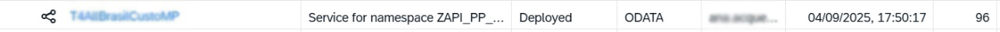

Marque 'Sim' se sua integração utilizar um AEM.
Primeiro, verifique no ambiente de QAS se o pacote da sua integração já existe.
Imagem 1: Pacote visível no ambiente de desenvolvimento.
Informe o nome exato do iFlow que será transportado e anexe a evidência da sua versão.
4.1 Evidência do iFlow: Anexe uma imagem que mostre claramente o nome do iFlow e sua versão mais recente.
Imagem 2: Tela do iFlow mostrando o nome e a versão.
Se a sua integração utiliza API Management, marque 'Sim' e preencha os quatro sub-itens obrigatórios: API Proxy, Product, Application e Key Value Maps (KVM).
Para cada um deles, informe o nome exato e anexe uma evidência correspondente.
Informe o nome da Credential Name configurada dentro do iFlow. Este é o usuário técnico que
será usado para a comunicação com outros sistemas.
Informe o ambiente SAP de destino. O valor padrão é NC2CLNT210, mas você deve alterá-lo caso
a integração se comunique com um sistema diferente (ex: S4QCLNT210).
Informe a User Role utilizada no iFlow para controle de acesso. O campo já vem preenchido
com base no nome do pacote, mas pode ser alterado se a sua configuração for diferente.
Preencha com o ID do Delta (Ex: PTM3772, OTC4051). Este ID será usado para
nomear o arquivo Excel final, facilitando a organização e o rastreamento.
Esta seção é usada para documentar os parâmetros que precisam ser alterados entre os ambientes (DEV, QAS, PRD).
Evite anexar imagens compostas. Adicione cada evidência em um campo separado.
Como adicionar múltiplas evidências:
Se a sua integração possui múltiplos *Receivers* com externalizações, adicione uma imagem para cada um, mesmo que os valores sejam iguais.
1. Clique em 'Adicionar nova imagem' para criar um novo bloco.
Imagem 8: Use este botão para cada nova evidência.
2. Anexe a evidência de cada tela separadamente.
Exemplo de evidência para o primeiro Receiver.
Abaixo de cada imagem, adicione os pares de Chave e Valor que precisam ser externalizados.
+ para adicionar e lixeira para remover ) mais pares de
Chave/Valor para a mesma imagem.Imagem 10: Adicione quantos pares Chave/Valor forem necessários para cada evidência.